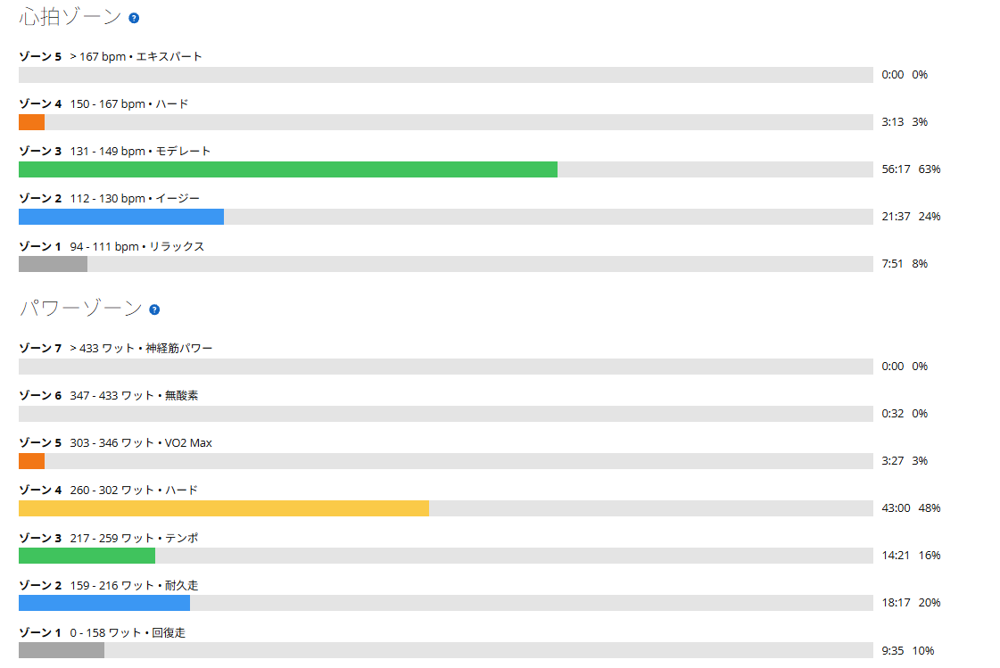

15分の予定が20分×3本に。SSTで見つけた「尾てい骨から回す」感覚
今日はローラーでSST。AIから提案されていたメニューは265W前後で15分×3本だった。ただ、脚の状態は悪くない。むしろ普通に踏めそうだったので、私は20分×3本に変更した。
どうせやるなら、富士ヒルゴールドに向けてもう少し負荷をかけたい。これまでAIには「練習を緩くしすぎないでほしい」と何度も伝えている。今回は私の方からメニューを厳しくしてみた。結果は267W、270W、278W。20分を3本、最後まで落とさずに走れた。そして今日は、数字以上に気になる発見があった。まだうまく言葉にできないけれど、ペダリングのコツらしきものをつかみかけたのだ。

最初の5分が、やけにきつい
ウォームアップを済ませて1本目に入ると、開始から5分ほどが結構きつかった。「あれ、今日はこんなに大変なのか」と思ったものの、そのまま踏んでいると身体が温まったのか、だんだん回せるようになってきた。同じような出力なのに、最初よりも楽に感じる。身体の反応が落ち着いてきたのかもしれない。
もちろんSSTなので、余裕しゃくしゃくというわけではない。ただ、出だしのきつさがずっと続いたわけでもなかった。
267・270・278W。3本目が一番高い
| 本数 | 時間 | 平均パワー | 心拍平均 | ケイデンス |
|---|---|---|---|---|
| 1本目 | 20分 | 267W | 136bpm | 84rpm |
| 2本目 | 20分 | 270W | 142bpm | 83rpm |
| 3本目 | 20分 | 278W | 145bpm | 80rpm |
現在のFTP設定は289W。3本の平均出力は約272Wで、FTP比約94％。メインセット合計は約60分になった。10月27日の20分×3本では、3本目が257Wまで落ちた。10月30日は270・271・274Wで揃え、今回はさらに後半の方が踏めている。
3本目も途中までは結構余裕があった。最後の2分ほどで、設定を272Wから278Wに引き上げた。上げたあとはもちろんきつかったが、限界でどうにもならないという感じではなかった。なお、表の278WはGarminのラップに記録された3本目全体の平均で、終盤に変更した設定値とは別の数字だ。
「15分でいい」と言われていたのに20分に増やし、最後は出力まで上げる。AIに練習が緩いと文句を言っているうちに、自分で自分を追い込むようになってきた。まあ、良いことだと思いたい。
「尾てい骨から回す」って何だ？
今日、踏みながらふと感じたことがある。
- 尾てい骨あたりから回るような感覚
- ペダルだけではなく、後輪を回しているイメージ
- ペダルを大きく回す意識
この3つを意識すると、なんだかうまくパワーが出る気がした。特に低ケイデンスのとき、その感覚がしっくりくる。ただし、尾てい骨に力を入れているわけではない。お尻をサドルに押し付けるという話でもない。なんというか、尾てい骨のあたりを起点に、脚とペダルが大きく回っていくような感覚だ。書いている自分でも、何を言っているのかよく分からない。
AIいわく、この曖昧な言葉だけでは、実際にどの筋肉や動きが変わったのかは断定できないらしい。なるほど。とりあえず今日は、難しい理屈よりも「この感じだと回しやすい」という手応えを覚えておくことにする。
約48km・NP252W・TSS113
- 全体47.79km / 1時間29分14秒 / 運動量1,276kJ
- 負荷平均238W / NP252W / IF0.873 / TSS112.6 / FTP設定289W
- 心拍・回転平均134bpm / 最大161bpm / 平均81rpm

FTP付近まで使う練習として、しっかり負荷を積めたと思う。1本目から3本目にかけて平均心拍は136→142→145bpmと上がっている。出力も上げているので、この変化だけで何かを決めつけることはできないが、パワーのグラフを見る限り、終盤に大きく崩れた様子はない。
そして、平均ケイデンスは84→83→80rpmと少しずつ低下。それでもパワーは上がった。いつもローラーでは低ケイデンス寄りで踏んでいるが、今日はその回し方の中に、新しい感覚が加わったのかもしれない。
一歩前進、していると信じたい
私の目標は、2027年の富士ヒルでゴールドを取ること。そしてローラーで1時間300Wを維持できるようになることだ。今回できたのは、レストを挟んだ20分×3本。合計60分踏めたからといって、そのまま60分連続で約272Wを出せるわけではない。それでも、10月27日は最後に失速したメニューを、2回続けて落とさずに終えられた。これは素直に嬉しい。
さらに、うまく説明できないペダリングの感覚まで見つかった。この「尾てい骨から回す」が本当に役立つのか、単なる今日だけの思いつきなのかは、まだ分からない。次の練習でも同じように回せるか試してみたい。
パワーの数字を追いかけるだけでなく、身体の使い方にも発見がある。自転車は長く乗っていても、まだまだ分からないことが多い。今日もまた、富士ヒルゴールドに向けて一歩前進……していると信じたい。